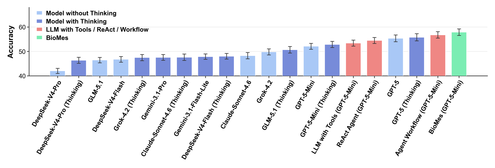

Biological multi-expert system
BioMes
Biological hypotheses, generated by simulated expert discussion.
BioMes is a biological multi-expert system that generates hypotheses through simulated discussion among domain-specific AI experts. Instead of executing a fixed pipeline, it instantiates specialists — in biochemistry, biophysics, cell biology, and computational biology — who search evidence, challenge each other's assumptions, and are synthesized and critiqued into mechanistically grounded, testable hypotheses. On FutureBio, a benchmark built to resist memorization, BioMes outperforms general-purpose LLMs and existing agent paradigms — and in a prospective wet-lab study, it led to the discovery of NMT2 as a new regulator of autophagy.
The problem
The bottleneck isn't more data. It's connecting it across disciplines.
Many of biology's defining advances depended on hypotheses that organized dispersed evidence into testable mechanistic explanations. As life-science knowledge expands in technical depth and disciplinary breadth, that kind of synthesis is getting harder — not because there is more data, but because relevant evidence is scattered across papers, databases, and disciplines. Existing LLM-based agents typically decompose hypothesis generation into a fixed pipeline of retrieval, synthesis, reasoning, and generation, executed once, in order. In practice, though, hypotheses are sharpened through discussion among researchers with different backgrounds, who bring distinct evidence to bear, expose hidden assumptions, and refine claims against mechanistic and experimental constraints.
- 1953 Double-helix model of DNA
- 1961 Operon model of gene regulation
- 1961 Chemiosmotic theory of ATP synthesis
Landmark hypotheses that organized dispersed evidence into testable mechanisms.
Decompose hypothesis generation into a fixed pipeline — retrieval, synthesis, reasoning, generation — executed once, in order.
Instantiates complementary domain experts who search evidence, challenge assumptions, and expose contradictions until a hypothesis holds up.
See it in practice
Four experts, one question.
Considers Golgi localization, membrane trafficking, and autophagosome formation.
Examines molecular function and whether a mechanistic biochemical link is plausible.
Challenges whether the proposed mechanism is physically consistent with membrane organization or trafficking.
Combines evidence and disagreement into a testable candidate hypothesis.
How BioMes works
From question to critiqued hypothesis — and back again.
Assemble
Instantiate relevant domain-specific experts for the biological question.
Discuss
Experts search evidence, propose mechanisms, challenge assumptions, and identify contradictions.
Synthesize
Distill consensus, disagreement, evidence, and candidate mechanisms.
Critique
Evaluate hypotheses for evidential support, logical consistency, novelty, and experimental actionability.
Steps 02–04 aren't a straight line: the critic can raise new sub-questions that send the discussion back for another round, until the hypothesis is fully grounded.
![BioMes architecture diagram. Top: a scientific question passes to a Coordinator that selects relevant experts; experts hold a discussion; a Synthesizer distills consensus, divergence, and complementary views into a structured summary; an Answer step organizes the result; a Critic evaluates the answer and raises new sub-questions, looping back to the Coordinator, until a detailed answer is produced. Bottom: the expert pool includes Biochemistry, Biophysics, Cell Biology, Genetics, and other domain experts, each contributing field-specific considerations.](assets/method.png)
Results
Two tests: a benchmark, and a real discovery.
BioMes is first evaluated computationally, on a benchmark built to resist memorization. Then it is tested prospectively, on an open biological question carried all the way into the wet lab.
Can AI infer tomorrow's biology from yesterday's evidence?
FutureBio is built from life-science papers published after the evaluated LLMs' training cutoffs, so target findings are unlikely to appear in training data. Central findings are converted into question-answering tasks, and agents are evaluated without access to the source papers — testing inference from incomplete prior evidence, not recall or retrieval.
![FutureBio construction pipeline in three stages. Stage 1, Data Acquisition: abstracts are collected from top-tier JCR Q1 journals in the Cell Biology category, published after the evaluated model's release date. Stage 2, QA Extraction: an LLM extracts scientific hypothesis-inquiry questions and scientific-discovery-result answers from each abstract, for example Q: does protein X regulate phenotype Y? A: the possible mechanisms by which protein X regulates cell phenotype Y. Stage 3, QA Filter: an LLM-based quality filter screens each QA pair for relevance, clarity, and centrality, discarding low-quality pairs and passing the rest to a human expert check, yielding the final high-quality QA set.](assets/benchmark_pipeline.png)

From an open question to a confirmed regulator.
Autophagy is a conserved, lysosome-dependent pathway that maintains cellular homeostasis, and its dysregulation is implicated in neurodegeneration, cancer, and metabolic disease. Because autophagosome formation depends on membrane trafficking and organelle communication, we posed BioMes a concrete question: which Golgi-localized proteins are most likely to regulate autophagy, and through what mechanisms?
NMT2
Wet-lab validation identified NMT2 as a previously uncharacterized regulator of autophagy — confirming a hypothesis generated through simulated expert discussion. Perturbing NMT2 significantly altered autophagic activity in follow-up experiments.
Looking ahead
Together, these results point toward human-in-the-loop agent systems that substantially accelerate experimentally grounded discovery in biology.
Try